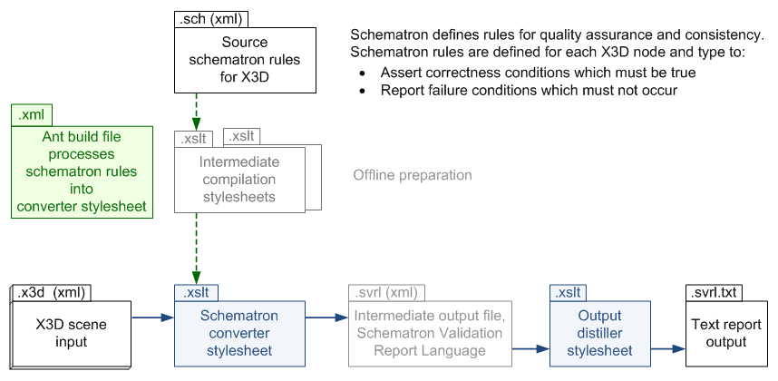

|
X3D Schematron Validation and Quality Assurance (QA) |
Summary | Motivation | Conversion | Resources | References | Contact
X3D Schematron provides an additional form of XML validation for X3D scenes. Authors can use X3D Schematron reports to verify semantic correctness and detect internal-consistency problems.
X3D Schematron validation rules have greater expressive power than DOCTYPE and Schema constraints, and are most effective when applied following initial DOCTYPE and Schema validation.
Schematron is a language for making assertions about patterns and internal consistency found in XML documents. If assertions for correct behavior fail, then error and warning messages are provided.
Reporting detected inconsistencies and error conditions enables authors to correct Extensible 3D (X3D) Graphics scene problems. Quality assurance to improve correctness can work on many levels, both syntactic and semantic.
The Extensible Markup Language (XML) encoding for .x3d scenes has offered three primary ways for checking the syntactic correctness of scenes:
An X3D Schematron ruleset is now available as a fourth approach to allow checking a wide variety requirements that are specific to X3D. These quality-assurance checks go beyond the capabilities of DTD or XML Schema grammar-based checking. Rule examples include:
Another relevant description for Schematron:
"Schematron is a small language for making assertions about the presence or absence of patterns in XML documents using XPaths. It is can be categorized as a schema language, a rules language, or a constraint language. Schematron is design to co-exist and augment with existing schema languages, providing a convenient way to easily express and test business and structural constraints." (Schematron Wiki)
The software setup for the conversion process is a bit involved, but the end result is straightforward. The following diagram shows the relationship between original source Schematron rules, X3D input scenes, and text output reports.

The following resources can be used to provide Schematron support for X3D.
The following references describe Schematron in further detail.
Of related interest: X3D DTDs and Schemas are maintained online and linked via the X3D Resources page. Example X3D DTD and schema usage tips are further documented as part of the X3D Scene Authoring Hints.
Updated: 2 July 2022
Maintained by Don Brutzman (brutzman at nps.edu). Comments & suggestions are welcome.Revisions are found under Sourceforge version control and available online at http://www.web3d.org/x3d/tools/schematron/X3dSchematron.html
{kind=link}